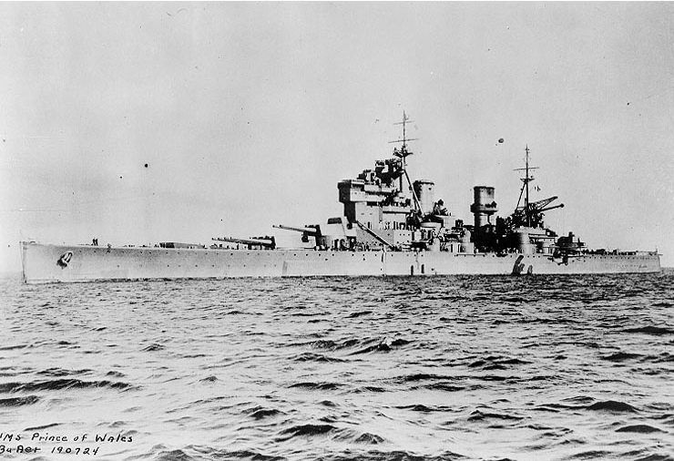
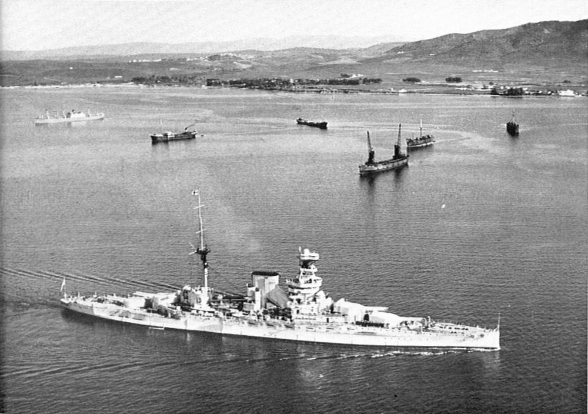

{kind=link}
{kind=link}

| Les Cuirasses | |||
|---|---|---|---|
|  | Classe King Georges V, HMS Prince Of Wales |
Le HMS Prince of Wales (pennant number 53), septieme navire portant ce nom, est un cuirassE de classe King George V (1939) de la Royal Navy coule en meme temps que le croiseur de bataille HMS Repulse par les avions de l'Empire du Japon le long des cotes de Kuantan (mer de Chine meridionale), le 10 decembre 1941, dans les premiers jours de la bataille de Malaisie. En decembre 1941, les cuirasses Prince of Wales et Repulse sont envoyes sans couverture aerienne a l'attaque des convois de debarquement japonais en Malaisie. Ils sont surpris par une attaque de bombardiers et d'avions torpilleurs japonais, et tous deux coules. Le Prince of Wales est endommage de la meme maniere que le Bismarck, par une torpille à l'arriere. L'arbre de transmission d'une helice est tordu dans l'explosion, detruisant en continuant de tourner les cloisons etanches, ce qui provoque une voie d'eau dans le compartiment des machines. A 13 h 15 le 10 decembre 1941, l'ordre d'abandonner le navire est donne et, à 13 h 20, le Prince of Wales chavire et coule. Le naufrage fait 327 disparus dont l'amiral Tom Phillips, commandant l'escadre, et le capitaine de vaisseau Leach, commandant du cuirasse. |
Longueur : 227,1 metres Maitre-bau : 34,3 m Tirant d'eau : 8,8 m Deplacement : 43 780 tonnes Propulsion : 4 turbines a vapeur Puissance : 110 000 CV (80,96MW) Vitesse : 28 noeuds |
|  | Classe Queen Elizabeth, HMS Queen Elizabeth |
Le HMS Queen Elizabeth etait un cuirasse et le navire de tete de la classe Queen Elizabeth de la Royal Navy qui a servi durant la Premiere et la Seconde Guerre mondiale. Il est finalement demoli en juillet 1948 |
Longueur : 196,8 mn Maitre-bau : 27,6 m Tirant d'eau : 8,80 m A pleine charge : 32 004 t Propulsion : 2 turbines a vapeur Parsons 24 chaudieres : Babcock & Wilcox Puissance : 56 000 ch Vitesse : 23 noeuds (43 km/h) |
Retrouver la page complète sur Github UwU
Vous pouvez me contacter sur Discord via mon # = Alice(SaabniaTv)#0001 ou via mon serveur discord